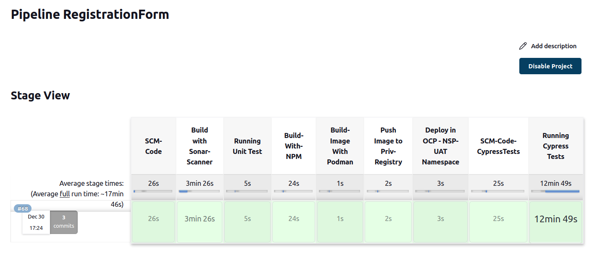

Grafana Setup
Presented By:
| Er. Taj Fatima |
| Er. Himansu |
| Er. Ankur |
| Er. Manish |
| Er. Amit Kumar |
Agenda
| ➤ | About Grafana |
| ➤ | What is Infrastructure Monitoring? |
| ➤ | Prometheus: The Heart of Monitoring |
| ➤ | Node Exporter: Collecting System Metrics |
| ➤ | Grafana: Visualization and Alerting |
| ➤ | Setting up Prometheus and Node Exporter |
| ➤ | Creating Dashboards in Grafana |
| ➤ | Setting Alerts in Grafana |
| ➤ | Conclusion |
About Grafana
Grafana is an open-source data visualization and monitoring tool that allows users to
create interactive and
customizable dashboards for analyzing and displaying data from diverse sources.
customizable dashboards for analyzing and displaying data from diverse sources.
What is Infrastructure Monitoring

- Real-Time Visibility
- Alerting and Notification
- Fault Detection
- Performance Optimization
- Security
Prometheus: The Heart of Monitoring
Black box exporter: Collecting System Metrics
- Faster and More Frequent Releases
- Improved Code Quality
- Reduced Manual Errors
- Increased Collaboration
- Time and Cost Savings
Screenshot for deployment (CICD) 
Grafana: Visualization and Alerting
Setting up Prometheus and Node Exporter
- Comprehensive Monitoring
- Real-time Alerting
- Centralized Dashboard
- Customizable Dashboards
- Historical Data Analysis
- Integration with Multiple Data Sources
- User-friendly Interface
- Scalability
- Cost-Effectiveness
Creating Dashboards in Grafana

{kind=link}
{kind=link}
{kind=link}
{kind=link}
Setting Alerts in Grafana
OCP Setup
- Simplified Application Deployment
- Scalability
- Container Management
- DevOps Enablement
- Application Portability
- Monitoring and Logging
Conclusion and Q&A
Elasticsearch
- Full-text Search
- Real-time Data Indexing
- Scalability and High Availability
- JSON-based Documents
- Aggregation and Analytics
- RESTful API
- Open-source and Active Community
- Multi-language Support
- Integration with the Elastic Stack
- Near Real-time Analytics
{kind=link}
{kind=link}
Problems
APIsix
- Microservices Architecture
- Load Balancing
- Security and Authentication
- Caching
- Logging and Monitoring
- Analytics and Metrics
- Service Discovery and Health Checks
- API Versioning
{kind=link}
{kind=link}